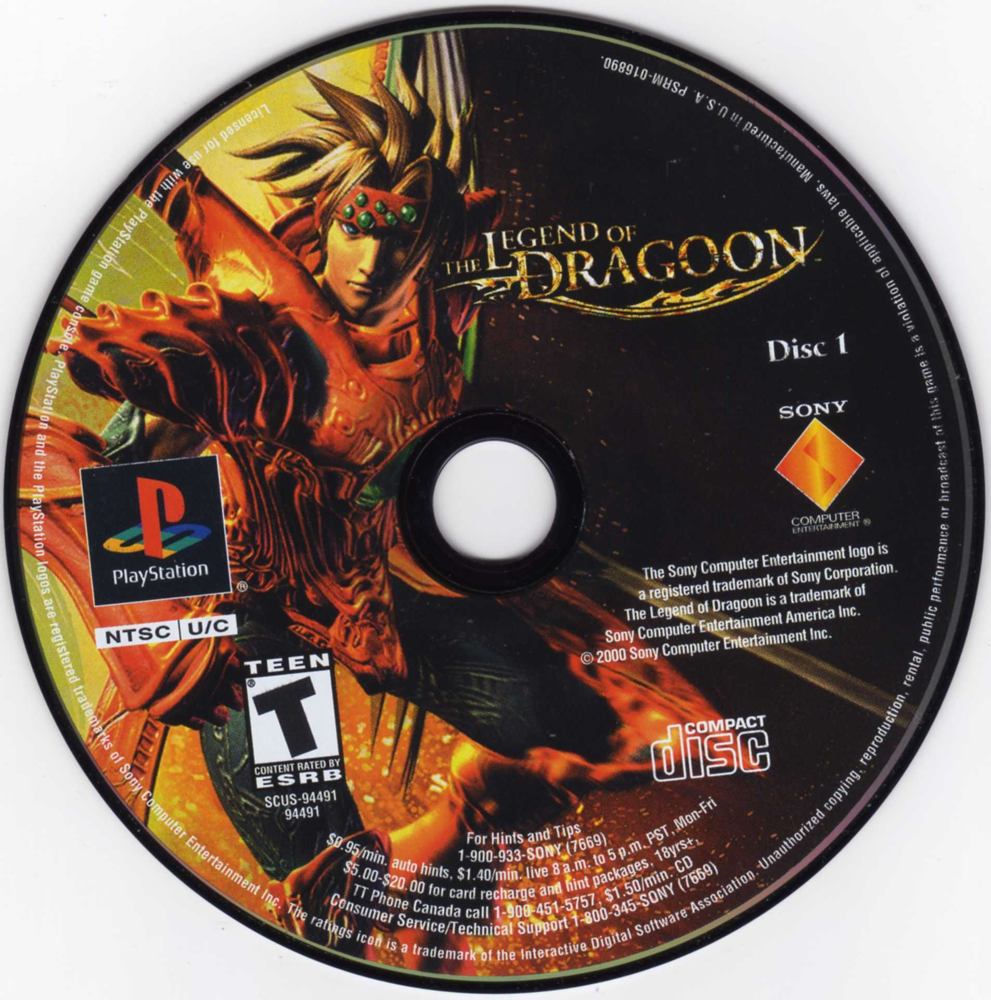
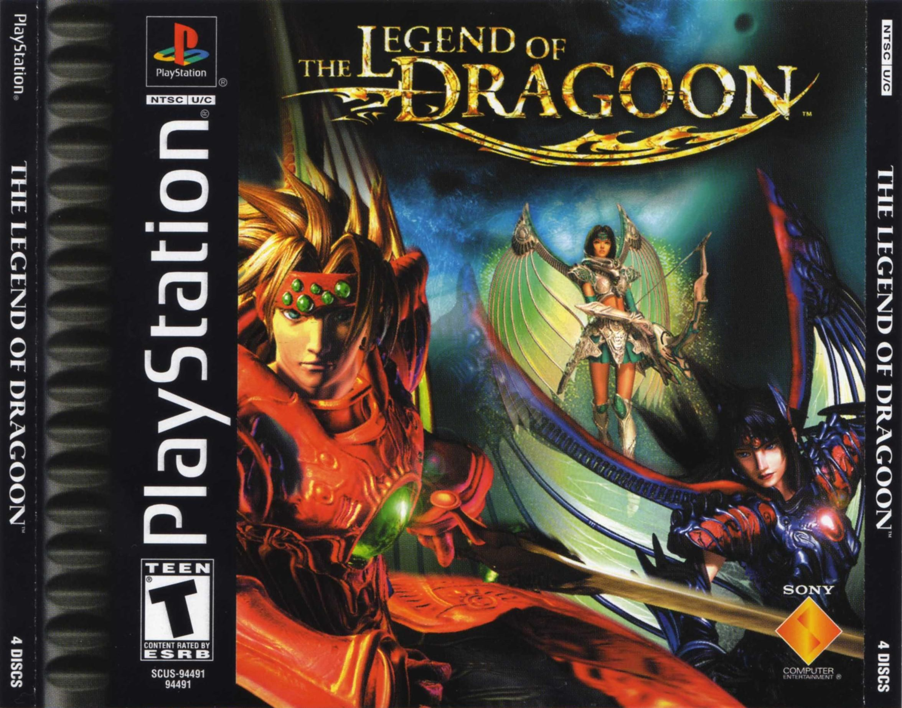
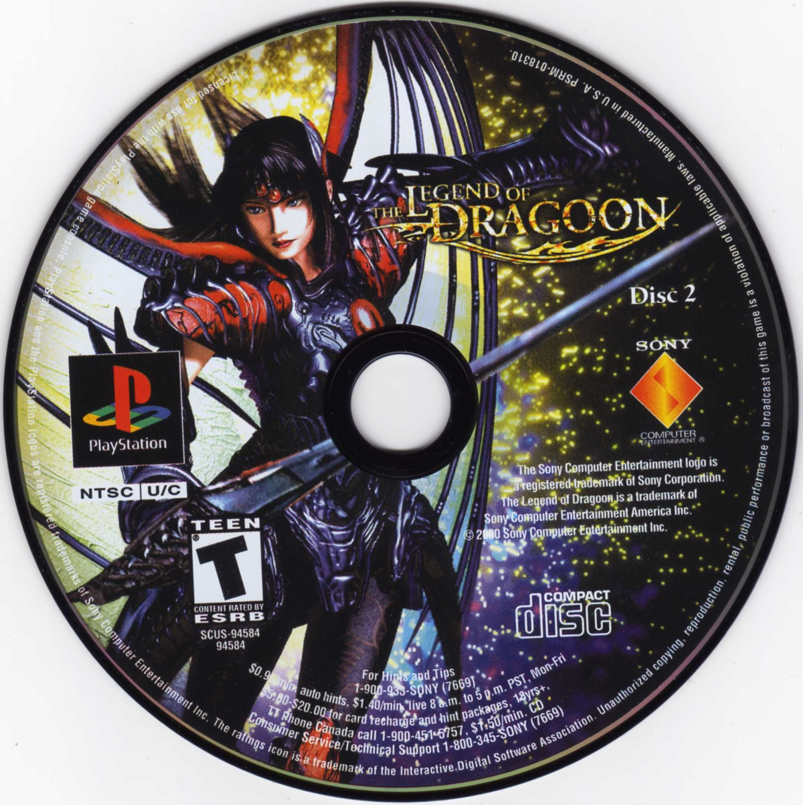
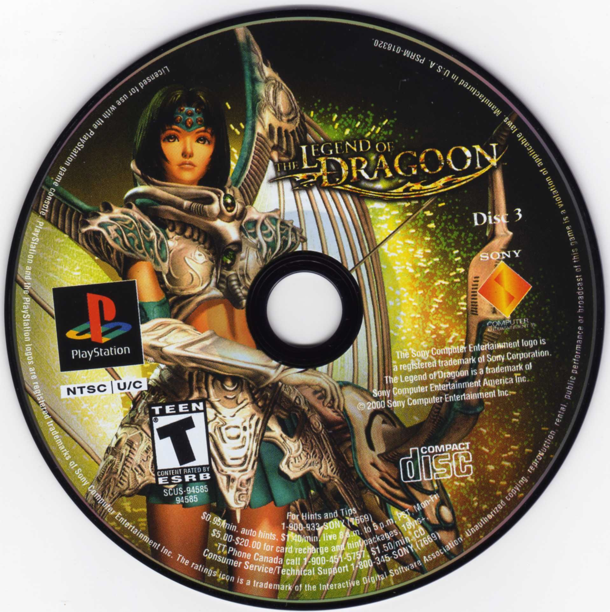
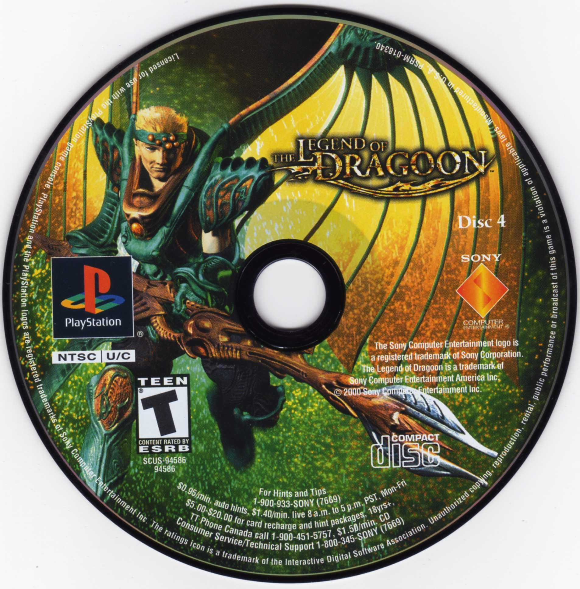

Primeiro disco
CD 1
Diálogos62,1%
Imagens100%

Tradução brasileira para PlayStation
Meu jogo favorito de PS1 está ganhando vida em português. Estou revisando o trabalho já feito com base na versão japonesa; o patch do CD 1 foi retirado enquanto preparo essa nova etapa.
Aviso sobre o patch
Ao trabalhar no CD 2, percebi que a tradução da versão americana traz muitas adaptações que deixavam algumas passagens pouco naturais em português. Por isso, retirei o patch anterior do CD 1 e estou revendo o conteúdo já traduzido com base na versão japonesa.
Não há patch de The Legend of Dragoon disponível para download no momento. Uma nova versão será publicada depois da integração, da revisão dos diálogos e dos testes.
Projeto em andamento
Os elementos comuns aos quatro CDs já foram revisados e integrados. Os diálogos seguem em revisão com base na versão japonesa; acompanhe abaixo o avanço de cada disco.
Última atualização:

Primeiro disco

Segundo disco

Terceiro disco

Quarto disco
Coerência com o áudio
Essas partes têm narração em inglês. Usar o japonês como referência nelas poderia deixar o texto e o áudio incoerentes. Alguns nomes de magias e combos também precisaram de adaptações por causa do limite de caracteres do jogo.
A dublagem não está disponível neste projeto por falta de recursos.
Gameplay no canal
Acompanhe The Legend of Dragoon em português no Cantinho da Angélica. Cada passagem mostrada na série já foi revisada antes da gravação.
Revisão com base no japonês
Estas capturas mostram trechos já revisados com base na versão japonesa, incluindo diálogos, escolhas, itens e nomes de lugares.
Clique em uma imagem para ampliar.
Ajude na revisão
Se você jogou com uma versão anterior do patch, ainda pode enviar uma captura de tela e explicar onde encontrou o problema. O formulário continua aberto para esses relatos, mesmo com o download pausado.
◇ Os relatos serão privados e não aparecerão publicamente no site.